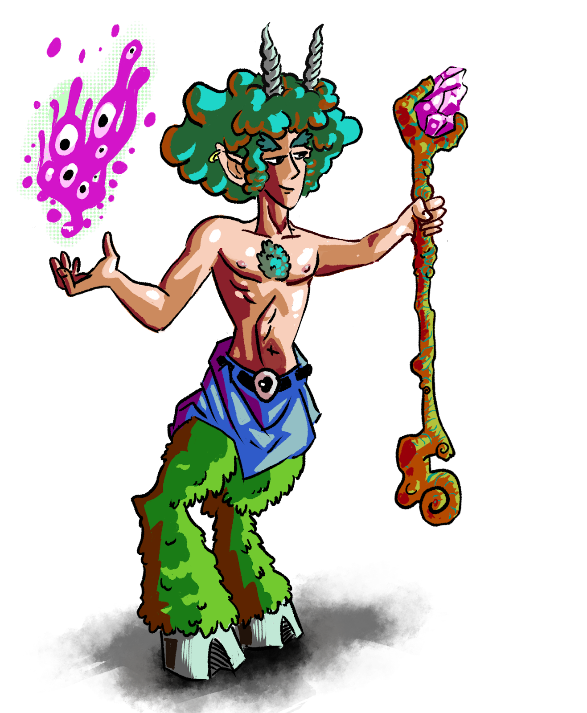
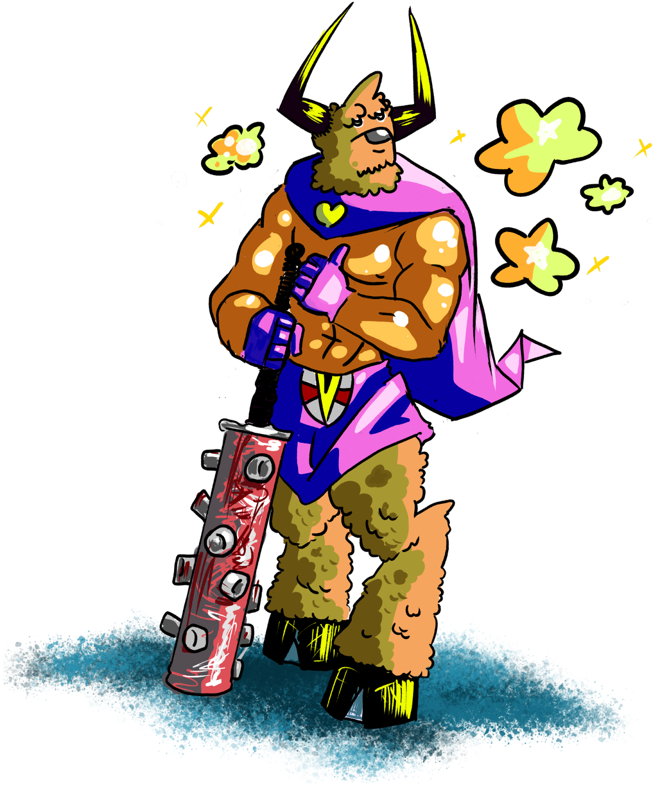
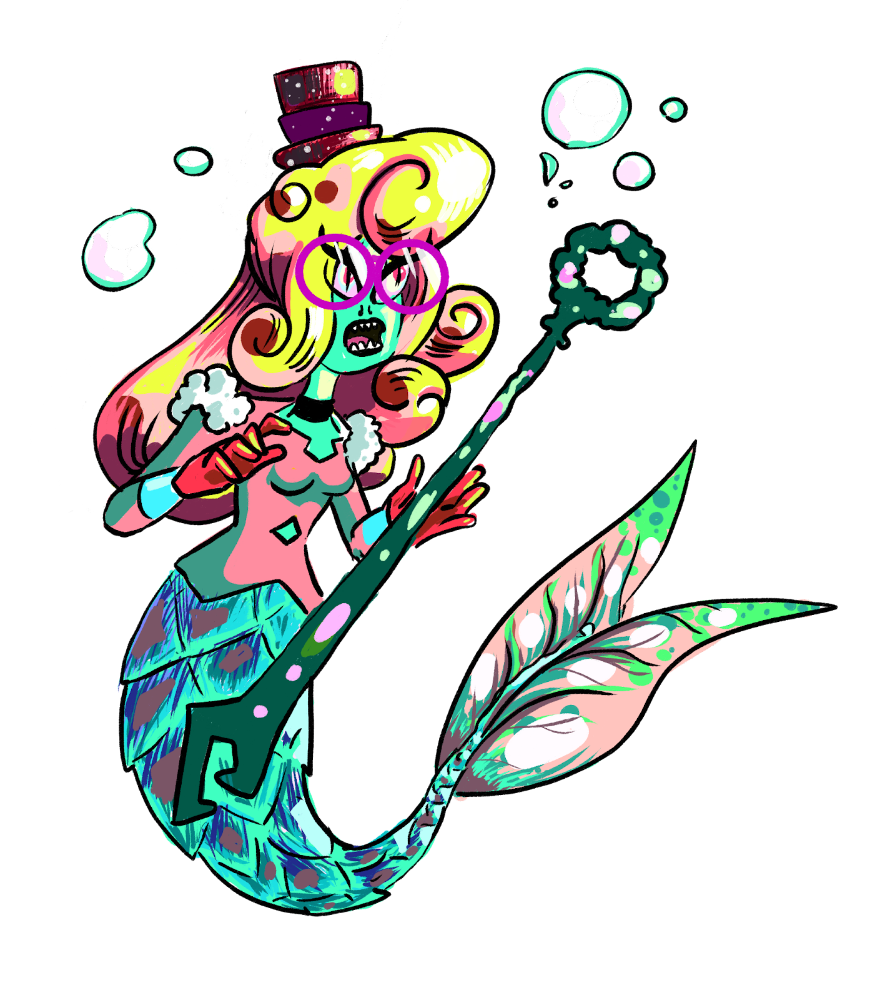

These are the species you can play as. All the playable species are 5 square foot creatures.
FaunsGraceful and in tune with the natural world, Fauns embody the harmony of Terra Megalithia's wilds. With their music and art deeply woven into the magic of the land, Fauns navigate the forests and meadows with ease, serving as mediators between the untamed forces of nature and the burgeoning societies of the realm.Size: Sq Ft 5, Height 3-5 ft HP Maximum: 100 Energy Maximum: 10 Encumbrance Capacity: 80 Natural Defense: +1 Speed: 35 feet Gets an Advantage Bonus on Agility rolls equal to his Small Bonus. Fauns do not receive penalties or have a reduced movement speed for difficult, slippery surfaces, and steep terrain. |
 |
MinotaursMighty and formidable, Minotaurs are the guardians of ancient secrets and sacred sites. Their Strength is legendary, as is their unwavering honor. Living in the labyrinthine complexes of Terra Megalithia, they are both a symbol of protection and the challenge to those who dare to uncover the ancient mysteries they guard.Size: Sq Ft 5, Height 7-9 ft HP Maximum: 110 Energy Maximum: 10 Encumbrance Capacity: 150 Natural Defense: +2 Speed: 30 feet Gets an advantage bonus for Strength rolls equal to her Small Bonus. As long as a minotaur has not been teleported, she cannot become lost. She also cannot be moved by the effects of abilities. |
 |
MerfolkBeneath the waves of Terra Megalithia's vast oceans and rivers dwell the Merfolk, beings deeply connected to the water's ebb and flow. With societies as rich and deep as the waters they call home, Merfolk are known for their wisdom and the songs.Size: Sq Ft 5, Height 4-6 ft HP: Maximum 90 Energy Maximum: 12 Encumbrance Capacity: 80 Speed: Ground 25 feet, Swimming 40 feet. Gets an Advantage Bonus on Wisdom rolls equal to her Small Bonus Merfolk have a leg form for being above the surface and a fin form for being immersed in water. They also possess the ability to breathe underwater. |
 |